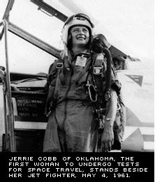
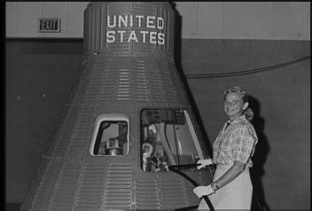
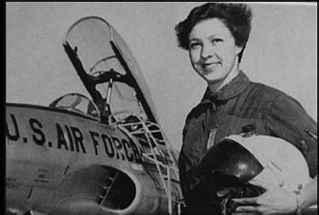
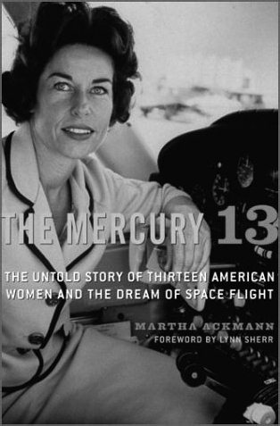

Группа «Меркурий-13»
Сразу оговорюсь, что «Меркурий-13» – это не название космического корабля. Хотя не мудрено подумать именно так. Конечно же, мог быть в истории космонавтики и такой космический аппарат. Но это только в том случае, если бы американская программа освоения космоса имела иные очертания, чем те, которые ныне всем известны.
А несчастливый номер достался группе женщин-астронавтов, которые в начале 1960-х годов всерьез вознамерились покорить Вселенную на кораблях серии «Меркурий». Их было тринадцать. По аналогии с мужской семеркой первых астронавтов НАСА («Меркурий-7»), женский коллектив стали именовать впоследствии «Меркурий-13». Название было неофициальное, но оно прижилось. И сегодня никому не придет в голову именовать их как-то иначе.
Однако «чертова дюжина» не была бы таковой, если бы не сыграла с американками злую шутку – никто из них так никогда и не побывал в космосе. И вероятность того, что кому-то из них удастся преодолеть заветный рубеж, крайне мала.
Более чем на тридцать лет о них просто забыли. Да и сейчас несостоявшиеся пилоты «Меркуриев» приобрели некоторую известность благодаря собственным усилиям. Ну и еще усилиям средств массовой информации. Но никак не благодаря официальной историографии.
Вопросом возможного полета женщин в космос в американском аэрокосмическом ведомстве озадачились тогда, когда до самих рейсов на орбиту было еще относительно далеко. Еще когда происходил отбор в первый отряд астронавтов НАСА, врачи полюбопытствовали у кандидатов-мужчин насчет целесообразности участия женщин в космических полетах. Те с восторгом отнеслись к такой перспективе. Кроме чисто медико-биологического интереса, такой эксперимент носил бы и политический подтекст. Проиграв борьбу за первый спутник, американцы всерьез были намерены догнать Советский Союз. Правда, не могу уверенно ответить на вопрос, почему они делали ставку на приоритет именно в женском полете. Может быть потому, что заведомо «предполагали» проиграть соревнование за первого человека? Но это уже философские категории, о которых можно много рассуждать и не прийти ни к каким конкретным выводам. Поэтому есть смысл довериться историческим фактам и говорить только о том, что было, а не о том, что могло бы быть.

Джерри Кобб
Итак, в США заинтересовались возможностью женского космического полета. Сначала это был чисто умозрительный интерес, но совершенно неожиданно он перешел в практическое русло. Случилось это в 1959 году на проходившем в Майами, штат Флорида, Авиационном конвенте, где собрались лучшие авиаторы США. В работе форума участвовали не только пилоты, но и специалисты смежных профессий. Посетили его и два ведущих специалиста американской авиационно-космической медицины: доктор Рэндольф Лавлэйс и бригадный генерал ВВС Дональд Фликинджер. Оба принимали самое активное участие в недавно закончившемся отборе первых американских астронавтов. Лавлэйс помог НАСА определить основные требования к здоровью кандидатов и являлся председателем Специального консультативного комитета по жизнедеятельности человека. Кроме того, он был директором частной клиники в Альбукерке в штате Нью-Мексико, где и проводилось медицинское обследование пилотов для программы «Меркурий». Фликинджер же был научным руководителем отбора.
Двух медиков интересовал вопрос: готовы ли женщины отправиться в космос, если им дадут такой шанс? За время работы конвента Лавлэйс и Фликинджер успели переговорить на эту тему практически со всеми участницами форума. Результаты бесед их просто ошеломили. Почти все летчицы были готовы немедленно покинуть Землю, чтобы взглянуть на нее со стороны. Причем почти все они были готовы пожертвовать своей жизнью ради этой цели.
Тогда Лавлэйс и Фликинджер решили не откладывать это дело в долгий ящик и обратились к 28-летней Джеральдин Кобб, пилоту компании «Аэро Коммандер», с предложением пройти медицинские тесты на годность к космическому полету. Джерри с энтузиазмом согласилась. В то время она была хоть и молодой, но уже прославленной летчицей. Уроженка Оклахомы, Кобб начала летать на биплане в двенадцатилетнем возрасте. Первым ее инструктором стал отец, сам в прошлом военный летчик. Лицензию пилота Джерри получила в свой семнадцатый день рождения. Со временем она достигла квалификации летчика-испытателя и установила 4 мировых рекорда скорости и высоты. В 1959 году она была названа в США «Пилотом года». К тому моменту, когда Кобб предложили стать астронавтом, она имела 7 тысяч часов налета на самолетах 64 типов. Для сравнения: самый опытный пилот из группы «Меркурий-7» – Джон Гленн – на момент отбора имел налет 5 тысяч часов.
С той самой минуты, когда Кобб ответила согласием на предложение Лавлэйса и Фликинджера, и начинается история отряда «Меркурий-13». В феврале 1960 года Джерри прибыла в альбукеркскую клинику «Фонд Лавлэйса».
Надо отметить, что немалую роль в судьбе Кобб сыграла другая легендарная летчица – Жаклин Кокран, обладательница более 200 авиационных рекордов. В 1953 году она стала первой среди женщин, кто преодолел на самолете звуковой барьер. Кокран была богата – огромные доходы приносил ей косметический бизнес. К тому же она была давней подругой доктора Лавлэйса. Не удивительно, что Кокран и ее муж Флойд Одлам взяли на себя все финансовые издержки, связанные с тестированием Кобб в клинике в Альбукерке. Вопреки обычной практике, прессу о предстоящих исследованиях не проинформировали, и они должны были проходить в обстановке полной секретности.
Итак, Джерри Кобб отдалась в руки врачей. Ее проверяли точно так же, как незадолго до этого «мучили» Алана Шепарда, Вирджила Гриссома, Джона Гленна и прочих «меркурианцев». Проведенные в течение пяти дней 87 тестов включали езду на велотренажере и бег по бегущей дорожке до полного истощения сил, рентгеноскопирование тела и зубов, фотографирование сетчатки глаз. Подвергались анализу ее кровь и моча, она пила касторку, радиоактивную воду и бариевый раствор. Изучалось ее состояние при переходе из горизонтального положения в вертикальное. Она глотала метровой длины зонд. Ей вливали в уши ледяную воду и вводили в голову 18 игл для снятия характеристик мозговой деятельности.

Будущее казалось прекрасным
Кобб проходила проверки работы сердца и системы кровообращения на наклонном столе. В Лос-Аламосской научной лаборатории ее помещали в специальную камеру для замера обезжиренной массы тела и общего количества инкорпорированных радиоактивных веществ, определяли уровень калия в теле. Последующие кандидаты прозвали эту неприятную процедуру, напоминающую помещение в стальную духовку, «погребением заживо».
Показатели Кобб оказались настолько хороши, что в ряде случаев превосходили соответствующие показатели Шепарда сотоварищи, поэтому нет ничего удивительного в том, что было решено продолжить исследования. Джерри перевели в лабораторию госпиталя Администрации по делам ветеранов в Оклахома-сити для второй фазы обследования, включавшей физиологические и психологические тесты. Там «мучения» Кобб продолжились.
В одной из процедур, известной как «собачье купание», испытуемую помещали в бак с теплой водой, в котором она оказывалась полностью изолированной от света, звука и каких-либо вибраций. Температура воды совпадала с температурой тела, что обеспечивало отсутствие сенсорных ощущений. Нулевая плавучесть имитировала отсутствие силы тяжести. Таким образом, испытуемая изолировалась от любых внешних раздражителей – все ее органы чувств оказывались лишенными какой-либо информации. Неудивительно, что многие, будучи помещенными в такие условия, через короткий промежуток времени теряли контроль над собой и испытывали неконтролируемые галлюцинации. Но Кобб провела в абсолютной изоляции около 10 часов без отрицательных психофизиологических реакций. Успешное преодоление этого теста имело решающее значение – «собачье купание» имитировало основные факторы космического полета.
Следующим шагом было тестирование на базе военноморского флота в Пенсаколе в штате Флорида, где Кобб прошла двухдневное психологическое и медицинское обследование. У нее сняли электрокардиограмму в состоянии перегрузок и в высотно-компенсирующем костюме. Ее помещали во вращающуюся комнату для изучения координации. Но самым жутким экспериментом был так называемый «Дилберт Данкер», при котором испытуемую, одетую в летный костюм, сбрасывали с имитатора самолета в кромешной темноте в темный водный бассейн. Из него необходимо было выбраться как можно скорее, не выказывая при этом никаких признаков паники. Кобб удалось сделать это четко и без растерянности. Так же успешно Джерри перенесла все виды ускорений на центрифуге и на катапультируемом кресле.
Пройдя «все круги ада», Кобб была признана годной к космическим полетам в соответствии с критериями НАСА. Трудно описать чувства, которые испытала молодая летчица, выслушав вердикт врачей. Эмоции переполняли Джерри. Мысленно она уже видела себя в одной команде с мужчинами, которые готовились к полетам на «Меркуриях». Увы, надежды не оправдались. В конце 1959 года на конференции по мирному использованию космоса, проходившей в городе Талса, штат Оклахома, заместитель директора НАСА Джеймс Уэбб представил летчицу публике и объявил о ее назначении консультантом агентства. Должность была, конечно, престижной. Но Джерри ожидала совсем иного.
Пока Кобб консультировала НАСА, в клинике в Абулькер-ке специалисты продолжали анализировать результаты, полученные при обследовании первой женщины, претендовавшей на звание астронавта. С одной стороны, в распоряжении ученых имелось довольно много материалов, требовавших оценки и осмысления. Но, с другой стороны, все эти данные касались только одного человека, что не позволяло прийти к каким-то определенным выводам. Было решено расширить программу исследований и привлечь к ним других летчиц.
В Альбукерк для прохождения тестов пригласили 25 летчиц, списки которых составили на основе документов Федеральной авиационной администрации и женской авиационной организации The 99s. Основные требования при отборе мало чем отличались от аналогичных критериев для мужчин: возраст до 35 лет, хорошее здоровье, диплом бакалавра, лицензия пилота коммерческих авиалиний и не менее 2000 часов налета. Хотя некоторые из числа приглашенных чуть-чуть не вписывались в эти рамки, в основном, по возрасту.
Большую роль при отборе значило мнение Джерри Кобб. Если она говорила «нет», это означало, что кому-то «не повезло».

Мэри Уоллес Фанк
В феврале 1961 года медицинское тестирование началось. Чтобы не привлекать излишнего внимания, на обследование летчицы прибывали небольшими группами или поодиночке. Все они прошли через такое же горнило мук, как и за два года до этого Кобб. Самое любопытное, что врачи были вынуждены признать: женские результаты в целом превосходили результаты мужчин. Ассистент доктора Лавлэйса доктор Дональд Килгор позже вспоминал, что многие из испытуемых были экстраординарными личностями и прекрасными кандидатами в астронавты. Например, во время «собачьего купания» Мэри Уоллес Фанк пробыла в купели 10 часов 35 минут, в три раза превысив лучший результат мужчин. Иначе говоря, Джерри Кобб, считавшаяся на тот момент «эталоном», была не исключением. В результате двенадцать обследуемых были признаны годными для прохождения подготовки.
Итак, в группу «Меркурий-13» вошли: Сара Ли Горелик, 29 лет, бакалавр математики, участница женских авиационных соревнований; Йан Дитрих, 36 лет, шеф-пилот аэроклуба, летчик транспортной авиации с налетом более 8000 часов; ее сестра-близнец Мэрион Дитрих, пилот, имевшая к тому же степени бакалавра по математике и физиологии; Майртл Кейджл, 38 лет, летчик-инструктор; Джеральдин Кобб, 30 лет, мировая рекордсменка, консультант НАСА, единственная женщина, полностью прошедшая все фазы тестирования на годность к космическому полету; Айрин Левертон, 36 лет, позже прошедшая специальные предкосмические тесты на авиабазе Эдвардс, она была также парашютисткой и инспектором летной школы; Джеральдин Слоун, 33 года, пилот компании «Тексас Инструменте», для которой она проводила секретные испытания авиационного оборудования на двухмоторном бомбардировщике; Джин Нора Стамбау, 26 лет, летчик-инструктор; Бернайс Тримбл Стидман, 37 лет, пилот чартерной авиации, участница авиационных соревнований; Мэри Уоллес Фанк, самая младшая в группе (24 года), шеф-пилот компании «Калифорния Флайинг Сервис», позднее в качестве добровольца она принимала участие в испытаниях в барокамере и на центрифуге, проводимых авиационной службой Морской пехоты США; Джейн Бриггс Харт, 40 лет, опытная летчица, супруга сенатора Филиппа Харта; Джин Хикссон, 39 лет, летчик-инструктор, капитан резерва ВВС, вторая в мире женщина, преодолевшая звуковой барьер; Рэй Харл Эллисон, 32 года, летчик-инструктор и планеристка.
Доктор Лавлэйс был намерен продолжить подготовку, но тут в дело вмешалась большая политика. Военно-морской флот США хотел, чтобы НАСА закрыло проект. Испытания, запланированные на базе флота в Пенсаколе, несколько раз переносились. Как впоследствии вспоминали сами участницы этих событий, это было неприятное чувство. «Я уже сидела на чемоданах, чтобы отправиться в Пенсаколу, но вызов так и не пришел», – рассказывала Джеральдин Слоун (в замужестве Трухилл).
12 сентября 1961 года, всего за пять дней до начала подготовки, программу отменили. Кобб вылетела в Вашингтон, где попыталась встретиться с представителями флота. Но моряки все свалили на аэрокосмическое управление, заявив, что инициатива исходила оттуда. Кобб считает, что саму идею полета женщины в космос убила дискриминация по половому признаку со стороны чиновников. Они просто не хотели, чтобы женщина на равных с мужчинами осваивала просторы Вселенной.
После официального закрытия программы, Кобб и Харт продолжали борьбу, пытаясь заручиться поддержкой вице-президента США Линдона Джонсона. Он выразил им сочувствие, но отказался что-либо делать. И все-таки в июле 1962 года в Конгрессе США прошли слушания, посвященные этому вопросу. Правда, сенаторы, выслушав доводы «за» и «против», все свели к шутке: вот когда начнется колонизация планет, тогда без женщин никак, а пока. В результате проект был окончательно закрыт.

Обложка книги Эрманна
Некоторое время Кобб еще пыталась что-то предпринять. Она встречалась с представителями НАСА и Пентагона, убеждая их в необходимости женского полета. Но даже старт Валентины Терешковой в июне 1963 года ничего не изменил. Единственной формальной уступкой, на которую пошло аэрокосмическое управление, было назначение Джерри Кобб консультантом директора агентства. Но с ней ни разу не советовались по вопросам роли женщин в космонавтике.
В конце концов все участники группы «Меркурий-13» вернулись к своим обычным занятиям.
Глубоко религиозная Джеральдин Кобб занялась миссионерской деятельностью в Южной Америке. Она летала к погибающим индейским племенам в глухих местах Амазонии, доставляя туда продовольствие и медикаменты. В 1963 году, все еще не оставляя мечты о полете на орбиту, она написала книгу «Женщина в космосе». Журнал «Лайф» выбрал ее в качестве «одной из самых выдающихся молодых женщин в Соединенных Штатах». В 1981 году ее кандидатура была выставлена на соискание Нобелевской премии мира за вклад в спасение амазонской сельвы.
Мэри Уоллес Фанк стала первой женщиной-инспектором Федеральной авиационной администрации США. В 1965 году она удостоилась титула одной из «выдающихся молодых женщин Америки» и служила «летающим послом доброй воли», посетив более 50 стран. В СССР она пыталась встретиться с Валентиной Терешковой, но безуспешно. В конце концов эта встреча состоялось, но только в 1988 году, когда Фанк прибыла в Москву в составе международной делегации летчиц. Терешкова пригласила делегацию в Звездный, и Фанк стала первым западным летчиком (из числа не принадлежавших к НАСА), посетившим советский Центр подготовки космонавтов.
Джейн Харт стала членом правления Национальной организации женщин, но, овдовев в 1976 году, больше не летала. Айрин Левертон работала летчиком телефонной компании в Аризоне, Майртл Кейджл – пилотом министерства сельского хозяйства США. Джин Нора Стамбау (в замужестве – Джессен) работала в корпорации «Бичкрафт» и была избрана президентом всеамериканской женской пилотской организации The 99s. Сара Горелик (Рэтли) стала бухгалтером, но продолжала летать на своей «Сессне-172». Рэй Эллисон (Уолтмэн) вскоре после описанных выше событий ушла из авиации, поселившись в Колорадо. Беа Стидман возглавляла международный женский авиакосмический музей. Джерри Слоун (Трухилл) летала в Техасе и, благодаря своей неординарной внешности, даже рекламировала авиационные костюмы из лайкры. Йан Дитрих стала пилотом реактивного самолета крупной корпорации. Умерла в 2008 году. Ее сестре Мэрион судьба отвела еще меньше. Она скончалась от рака в 1974 году. Умерли и Джин Хикссон, и Жаклин Кокран, на деньги которой летчицы смогли пройти медицинское обследование. Инициатор проекта доктор Лавлэйс погиб в авиационной катастрофе в конце 1960-х годов.
Фанк и Кобб никогда не оставляли своей надежды совершить полет в космос. Соответствующие заявления Кобб подавала в НАСА чуть ли не ежегодно. Последний раз она делала это в 1998 году после второго полета в космос Джона Гленна. Фанк также четыре раза подавала заявление в отряд астронавтов НАСА и четырежды получала отказ. Сейчас она отказалась от сотрудничества с аэрокосмическим ведомством, но все-таки намерена совершить космический полет. Поговаривают, что она уже купила билет на один из ближайших полетов суборбитальных космических аппаратов, которые во множестве разрабатываются в США и других странах. Ну что ж, как говорится, в добрый путь!
История первого в мире женского отряда покорительниц космоса началась в 1961 году, еще до полета Юрия Гагарина. Правда, и завершилась она в том же году. Завершилась, так и не начавшись. Хотя полет Валентины Терешковой вряд ли состоялся бы в 1963 году, если бы не Джеральдина Кобб и ее подруги. Косвенно именно они поспособствовали тому, чтобы и в Советском Союзе приступили к подготовке полета в космос женщины.
А почему же американцы отказались от возможности стать первыми в этом вопросе?
Те объяснения, которые дает НАСА – отсутствие женских скафандров и лишних тренажеров для тренировок, – вряд ли можно считать единственно верными. Вероятнее всего, в апреле 1961 года, получив очередной чувствительный удар от своих советских соперников, в администрации президента США Джона Кеннеди поняли, что нужно не догонять, а перегонять. Тогда-то и родилась знаменитая инициатива об отправке человека на Луну. Американцы сосредоточились на этой цели, отбросив все остальное, как несущественное. В тот момент среди факторов не первостепенной важности оказался и полет женщины. Такова жизнь!